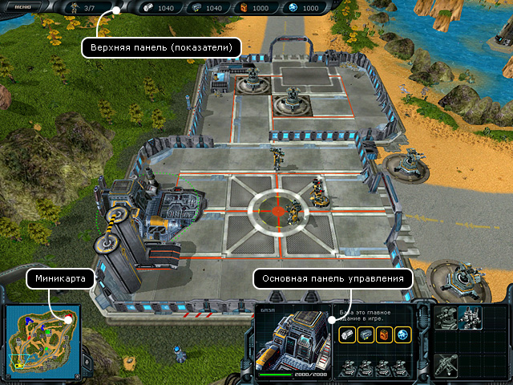
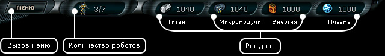
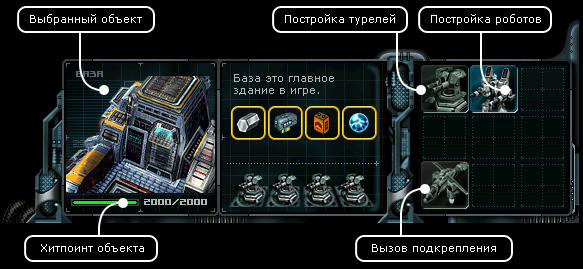

Планетарные
бои > Основной экран
|
Планетарные
бои > Основной экран
|
| Основной экран Для того, чтобы участвовать в планетарных боях, игроку нужно обратиться к правителю любой заселенной планеты, с просьбой о выдаче задания. Если в наличии есть такое задание, то правитель может дать его игроку. По сути, режим планетарных боев - это полнофункциональная игра в игре, со своим интерфейсом и правилами. |

|
1. Верхняя панель (показатели) |

| Нажмите кнопку "Меню" - откроется окно, где вы можете выбрать один из этих четырех пунктов: • продолжить • перезапуск миссии • сдаться • выход Правее кнопки вызова меню располагается показатель количества роботов, вида Х/Х. Первая цифра показывает количество уже имеющихся у вас роботов, а вторая цифра показывает, сколько всего роботов вы можете построить. Затем отображаются четыре показателя ваших ресурсов: титан, микромодули, энергия, плазма. 2. Миникарта
3. Основная панель управления |

|
При выборе здания в правой части основной панели располагаются несколько кнопок: • Постройка турелей - есть у всех зданий. • Постройка роботов - отображается только у баз. • Вызов подкрепления - есть у всех зданий. Администрация планеты старается всеми силами помочь, поэтому подготавливает некоторое количество роботов. Вызвать подмогу можно только раз в 8,5 минут. О готовности отряда подкрепления вам сообщит компьютер центра управления и кнопка станет активной. Правительственные вертолеты доставят подкрепление к зданию, из которого вы сделали вызов. |
| |